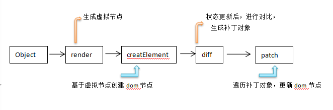
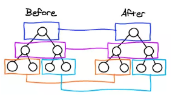
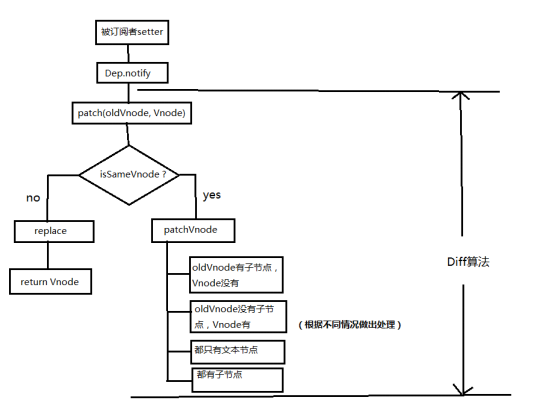

虚拟DOM和diff运算
DOM的含义
DOM是Document Object Model的英文缩写，翻译过来是文档对象模型，提供给Javascript用来动态修改文档状态。
Virtual DOM 和真实DOM
当我们修改了某个数据，如果直接渲染到真实DOM上，会引起整个DOM树的重绘和重排。我们希望修改一部分数据时不会牵扯到整个DOM树的改变，而是只改动我们需要改动的那一小部分。
所谓的virtual DOM就是将真实的DOM的数据抽取出来，以对象的形式模拟树形对象结构。
真实DOM:
1 | <div> |
虚拟DOM:
1 | var Vnode = { |
virtual DOM运行过程

diff比较算法
diff比较算法是为了比较新旧DOM节点的异同，根据异同调整更新方法。需要注意的是，比较只会在同层级进行。

diff比较算法的流程图

patch函数
1 | function patch (oldVnode, vnode) { |
patch函数的两个参数oldVnode和vnode分别代表旧节点和待更新节点。
sameVnode（）函数
sameVnode（）函数判断两个节点是否相同，如果两个节点都是一样的，那么就调用patchVnode（）函数深入检查他们的子节点。如果两个节点不一样那就说明Vnode完全被改变了，就可以直接替换oldVnode。
虽然这两个节点不一样但是他们的子节点一样怎么办？别忘了，diff可是逐层比较的，如果第一层不一样那么就不会继续深入比较第二层了。
patchVnode函数
该方法会通过比较新旧节点，根据不同的状态对DOM做合理的更新操作。具体如下:
- 判断oldVnode和Vnode是否指向同一对象，如果是，直接return
- 如果他们都有文本节点且不相等，那么将oldVnode的文本节点替换为Vnode的文本节点
- 如果oldVnode有子节点，Vnode没有，那么删除oldVnode的子节点
- 如果oldVnode没有子节点而Vnode有，那么将Vnode的子节点真实化后添加到节点中
- 如果两者都有子节点，那么执行updateChildren比较子节点
UpdateChildren函数
该函数主要通过while循环一遍遍对比两棵树的子节点来更新DOM。
具体可参考：
书：《Vue.js权威指南》（张耀春，黄轶等著）297-299页
博客：详解vue的diff算法https://www.cnblogs.com/wind-lanyan/p/9061684.html
这种方法，比直接替换所有的子节点要少很多DOM操作，在性能上有所提升，子节点越复杂时，提升效果越明显。
Vue.js 2.0 使用的Virtual DOM技术，除了在更新DOM有性能提升外，还可以很好的支持服务端渲染技术。